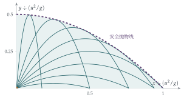

STEP II 2014，第 10 题
继续之前，请先阅读题目（原题为英文）。题目载于 STEP Support Programme 的题目资料库： step.maths.org/questions/14-s2-q10
引子
一座喷泉以相同的速率向四方八面喷水。水柱形成一个闪闪生辉的圆顶，外缘轮廓分明：在里面，每一点都有水经过；在外面，水一滴也到不了。这条边界是一条抛物线（parabola），称为安全抛物线（parabola of safety），因为炮口速率固定的大炮，无论以甚么角度发射，都打不中它外面的目标。
令人意外的是，这条边界本身并不是其中一条轨迹。它是整族轨迹的包络线（envelope），即一条与每条轨迹都相切一次的曲线，就像 第 8.1 节 中直线 \(y = 0\) 与那族抛物线相切一样。这道题目只需用到二次式的判别式（discriminant），便能把它求出来。
动笔之前
用 \(t\) 表示 \(x\) 和 \(y\)，然后消去 \(t\)。怎样用 \(\lambda = \tan\theta\) 表示 \(\sec^2\theta\)？
由 \(x = ut\cos\theta\) 和 \(y = ut\sin\theta - \frac12gt^2\)，代入 \(t = \frac{x}{u\cos\theta}\)： \[y = x\tan\theta - \frac{gx^2}{2u^2\cos^2\theta} = \lambda x - \frac{gx^2}{2u^2}(1 + \lambda^2),\] 其中用到 \(\sec^2\theta = 1 + \tan^2\theta\)。
逐步解题
阶段 1 固定 \(x\)，改变角度
对于固定的 \(x > 0\)，把 \(y\) 看成 \(\lambda\) 的函数。它是哪一类函数？当 \(\lambda\) 取遍所有实数时，它会取哪些值？
对于固定的 \(x\)，\(y\) 是 \(\lambda\) 的二次函数，首项系数 \(-\frac{gx^2}{2u^2}\) 为负：它是以 \(\lambda\) 为变量、开口向下的抛物线。它有极大值，而且当 \(\lambda \to \pm\infty\) 时，\(y \to -\infty\)。由于它是连续的，所以它会取遍不超过极大值的每一个值。极大值出现在 \(\frac{\mathrm{d}y}{\mathrm{d}\lambda} = x - \frac{gx^2}{u^2}\lambda = 0\) 之处，即 \(\lambda = \frac{u^2}{gx}\)，此时 \[Y = \frac{u^2}{gx}\,x - \frac{gx^2}{2u^2}\Bigl(1 + \frac{u^4}{g^2x^2}\Bigr) = \frac{u^2}{2g} - \frac{gx^2}{2u^2}. \qed\] （等价的说法是：点 \((x, y)\) 可以到达，当且仅当二次方程 \(\frac{gx^2}{2u^2}\lambda^2 - x\lambda + \frac{gx^2}{2u^2} + y = 0\) 有实根 \(\lambda\)，而判别式的条件给出 \(y \leq Y\)。）
阶段 2 区域
曲线 \(Y = \frac{u^2}{2g} - \frac{gx^2}{2u^2}\) 是一条开口向下的抛物线，顶点位于 \(\bigl(0, \frac{u^2}{2g}\bigr)\)，即垂直向上发射所达到的高度；它与地面相交于 \(x = \pm\frac{u^2}{g}\)，即最大射程。在它上面或下方（并在地面以上）的每一点都可以到达，而在它上方的点则全都到不了（图 11.9.1）。
经过严格位于曲线下方的一点，有多少条轨迹？经过曲线上的一点呢？
曲线下方的一点对应一个有两个实根的 \(\lambda\) 二次方程：两个抛射角，一高一低。曲线上的一点对应重根：恰好一条轨迹，并且在该点与曲线相切。

阶段 3 最远的点
距离 \(O\) 最远的可到达点（在地面上或地面以上）位于边界上。把距离的平方 \(x^2 + Y^2\) 写成 \(x^2\) 的函数。它是递增还是递减？
设 \(X = x^2\)。则 \[x^2 + Y^2 = X + \Bigl(\frac{u^2}{2g} - \frac{gX}{2u^2}\Bigr)^2, \qquad \frac{\mathrm{d}}{\mathrm{d}X}(x^2 + Y^2) = 1 - \frac{g}{u^2}\Bigl(\frac{u^2}{2g} - \frac{gX}{2u^2}\Bigr) = \frac12 + \frac{g^2X}{2u^4} > 0.\] 因此，沿着边界向外移动时，距离不断增加，而最远的点就是边界与地面相交之处，即 \(x = \frac{u^2}{g}\)。最远距离为 \[\frac{u^2}{g},\] 由平常以 \(45^\circ\) 发射的最大射程一击达到。■
回顾
把问题反过来问。不问某条给定的轨迹会去到哪里，而问哪些轨迹会经过某个给定的点。
以参数为未知数的二次方程。对于每一点，\(\lambda = \tan\theta\) 所满足的方程都是二次方程，而它的判别式决定该点能否到达。
两个、一个或没有。区域内的点有两个角度可以到达，边界上的点有一个，区域外的点则一个也没有。
背后的数学
包络线
单参数曲线族（one-parameter family of curves）\(\mathrm{F}(x, y, \lambda) = 0\) 往往有一条包络线：一条与族中每个成员都相切的曲线。求法是联立解 \(\mathrm{F} = 0\) 和 \(\frac{\partial\mathrm{F}}{\partial\lambda} = 0\)，这正是我们对 \(\lambda\) 求 \(y\) 的极大值时所做的事。包络线在科学中随处可见。一杯咖啡表面上那条明亮的光曲线，就是反射光线的包络线，称为焦散线（caustic）。超音速飞机的音爆，由它所发出声波的包络面传送，那就是马赫锥（Mach cone）。而在 第 8.1 节 中，一个微分方程（differential equation）的一族解的包络线，本身也是一个解，即所谓的“奇异”解。
焦点
安全抛物线有一个奇妙的性质：它的焦点就是发射点 \(O\)。（抛物线 \(y = c - \frac{x^2}{4c}\) 的焦点位于原点；这里 \(c = \frac{u^2}{2g}\)。）每条轨迹也都是抛物线，而所有轨迹的焦点都落在以 \(O\) 为圆心、半径为 \(\frac{u^2}{2g}\) 的圆上。这可以用能量来解释：抛射体在高度 \(y\) 时的速率是 \(\sqrt{u^2 - 2gy}\)，在准线（directrix）的高度 \(\frac{u^2}{2g}\) 处为零；而以同一条直线为准线并且经过 \(O\) 的抛物线，其焦点都在那个圆上。
伽利略（Galileo）在 1609 年前后证明了抛射体沿抛物线运动，并且在水平地面上，最大射程出现在 \(45^\circ\)。他的学生托里拆利（Evangelista Torricelli）以发明气压计而较为人熟悉，他在 1644 年的著作 De motu gravium 中发现了安全抛物线。对炮手来说，它回答了一个实际问题：究竟哪些目标在射程之内？托里拆利还证明了，经过给定一点的轨迹成对出现，两者的角度关于该点的方向与铅垂线之间的角平分线对称，这就是本题中的高射和低射。
思维技巧
要找出一族曲线所覆盖区域的边界，可固定一点，然后问：参数取哪些值时，会有曲线经过这一点？边界就是解的数目发生变化的地方。
同一个想法，即随着点的移动来数算解的数目，是光学中焦散线研究的基础，也是动力系统（dynamical systems）中分歧（bifurcation）理论的基础，更是突变理论（catastrophe theory）的基础；突变理论把方程的解的数目可以怎样变化加以分类。
延伸练习
爆开的烟花。试做 STEP II 2023，第 10 题 （载于 OCR 提供下载的 2023 年试卷 zip 文件内）。这道题把爆炸产生的粒子看成一个球面，其球心作自由下落，并找出一颗沿着安全抛物面（paraboloid of safety）运动的粒子。
向斜坡上发射。求速率为 \(u\) 的抛射体沿倾角为 \(\beta\) 的斜面向上发射时的最大射程。（提示：直线 \(y = x\tan\beta\) 与安全抛物线在哪里相交？）证明最佳角度平分斜坡与铅垂线之间的夹角。
两个角度。证明能到达点 \(P\) 的两个角度，关于 \(OP\) 与铅垂线夹角的平分线对称。
焦点。证明抛射角为 \(\theta\) 的轨迹，其焦点位于 \(\bigl(\frac{u^2}{2g}\sin2\theta, -\frac{u^2}{2g}\cos2\theta\bigr)\)，并由此证明这些焦点都落在以 \(O\) 为圆心的一个圆上。
延伸阅读
David Morin, Introduction to Classical Mechanics（Cambridge University Press），第 3 章，当中讨论了轨迹的包络线。
J. W. Bruce, P. J. Giblin & C. G. Gibson, “On caustics of plane curves”, American Mathematical Monthly 88 (1981)。几何学中的包络线与焦散线。
E. H. Lockwood, A Book of Curves（Cambridge University Press）。包络线、焦散线及许多经典曲线，并附作图方法。